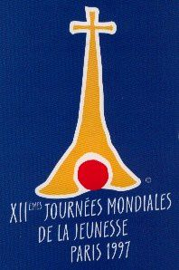

Désolé, contrairement à beaucoup de vacanciers, ce mois d’août a été pour mois très chargé. À peine le temps de relever mon mail… trop occupé par les JMJ…
Alors bon, pour vous consoler et vous envoyer quand même dans les Mascareignes, j’avais concocté un lien qui donnait des nouvelles des JMJ à L’île Maurice. Ce site est aujourd’hui disparu mais la définition des Mascareignes reste en ligne.
Les JMJ, journées mondiales de la jeunesse, sont le rendez-vous des jeunes catholiques dans le monde et en 1997, c’est Paris qui recevait ces presque 2 millions de migrants en plein cœur de l’été, un an avant un autre grand rassemblement pour la coupe du monde de football.
Aux JMJ, il n’y a pas de sélection, les délégations arrivent du monde entier en fonction de leur motivation et de leurs moyens. Le groupe de l’île Maurice, île sœur de la Réunion était de ceux là et en avait profité, chose encore peu développé à l’époque, pour mettre en ligne les photos de leurs préparatifs et le récit de leur voyage, de leurs échanges et découvertes en France, une première semaine en régions et la dernière à Paris.
Avec le temps, les souvenirs, comme certains sites web s’effacent, remplacés par d’autres.